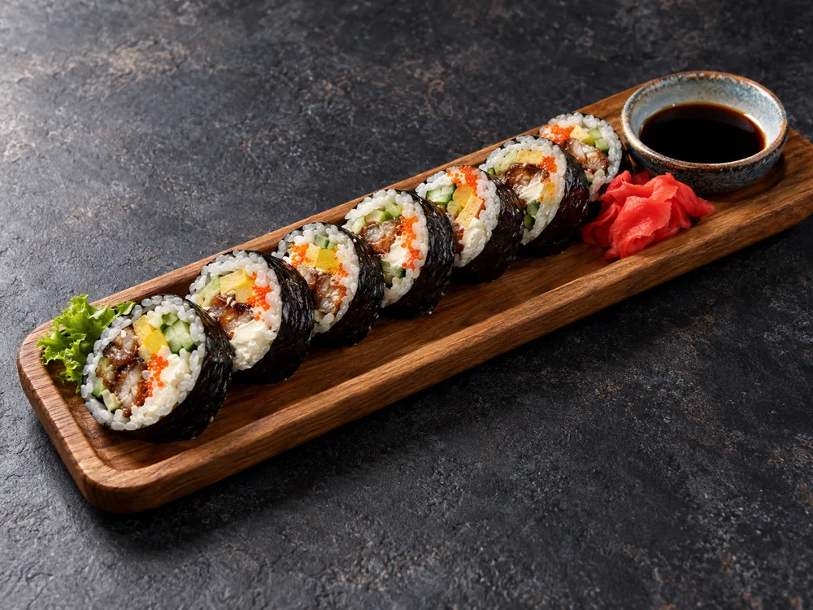
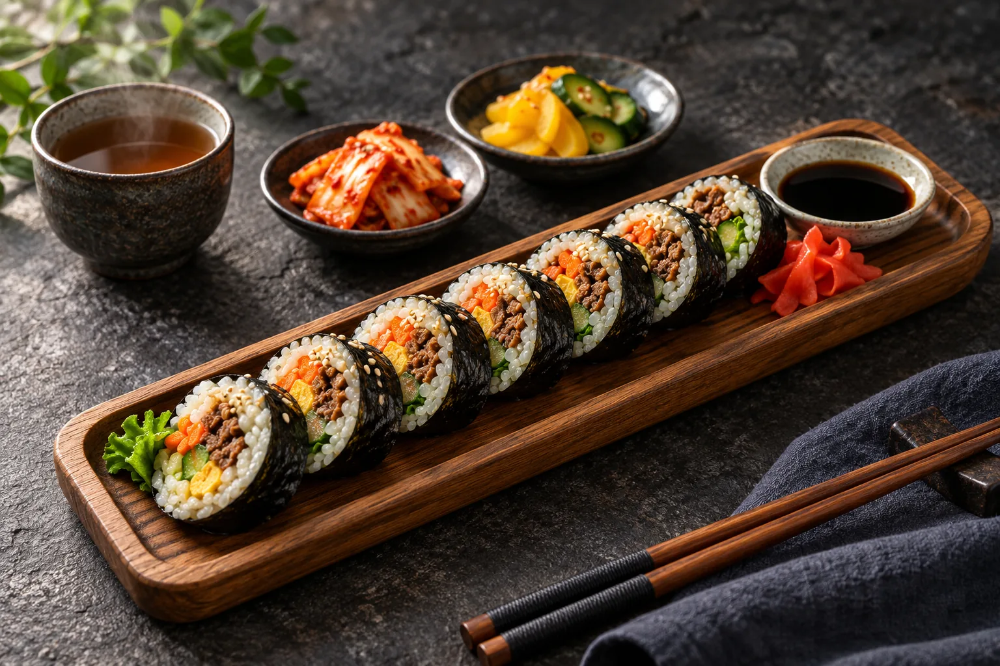
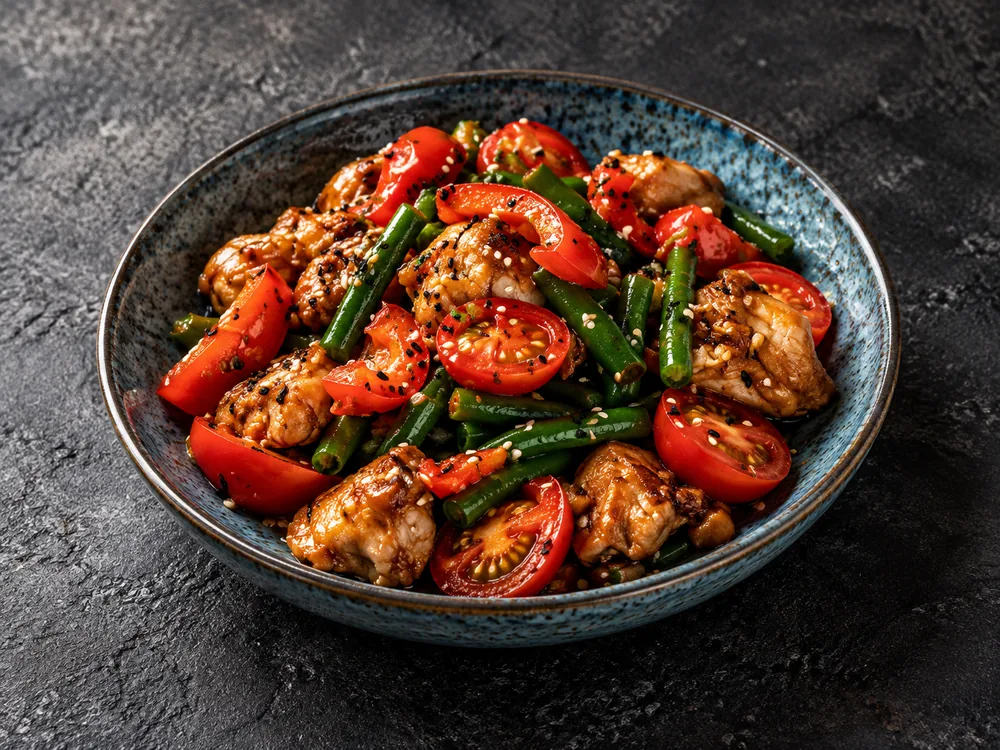
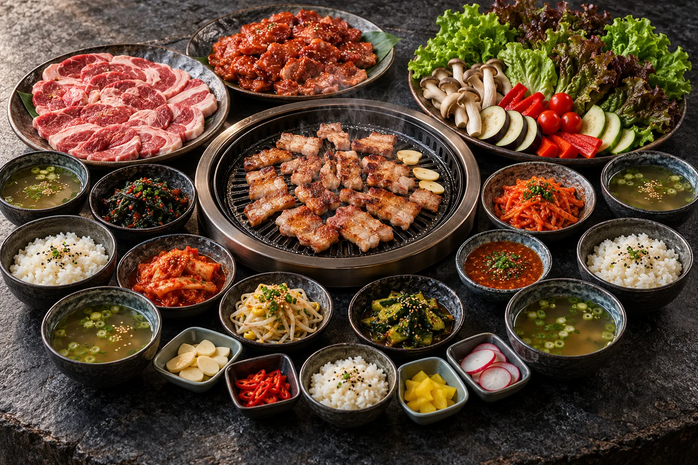

С угрём
Угорь, сливочный сыр, огурец, омлет, такуан и масаго.
330 г540 ₽
Гатчина · Красная, 13
Знакомьтесь с корейской кухней, собирайте друзей
на гриль или заходите пообедать на Красной, 13.

«Кимпаб» на Красной, 13. Здесь можно начать с ролла с любимой начинкой, согреться раменом или собраться за грилем на целый вечер.
В нашем названии всё просто: кимпабом в Корее называют рис с начинкой, завёрнутый в нори. Его едят палочками или руками. Попробуйте с говядиной, угрём или креветкой темпура.
Обеды по будням
12:00 15:00
В обеденном меню есть пибимпаб, супы и закуски. Для тех, кто не ест острое, готовим цыплёнка терияки, свинину в кисло-сладком соусе и вок с говядиной.
Посмотреть обеденное меню
Стоимость отдельных блюд из обеденного меню.
За одним столом
Самгёпсаль собирает всех вокруг гриля. Мясо, овощи, рис, бульон и закуски подают к общему столу.
Выберите набор. Цыплёнок, свинина или говядина, на 4 или 6 гостей.
Приготовьте за столом. Обжарьте мясо и овощи на гриле.
Соберите свой кусочек. Мясо, соус и кимчи заверните в лист салата.

| Набор | 4 гостя | 6 гостей |
|---|---|---|
| Цыплёнок | 3 400 ₽ | 5 100 ₽ |
| Свинина | 3 800 ₽ | 5 700 ₽ |
| Говядина | 4 200 ₽ | 6 300 ₽ |
Пока вы выбираете гриль или горячий суп, ребёнку можно заказать знакомые блюда. Есть наггетсы с картофелем, бульон с пельмешками и сливочная лапша.
Детское меню целикомПозвоните по номеру +7 921 994-94-00 или напишите в ВК. Назовите дату, время и количество гостей. Дождитесь подтверждения от команды гриль-бара.
В меню есть разные блюда. Например, юккедян можно заказать без острой заправки. Если не любите острое, скажите об этом официанту – он поможет с выбором.
В отдельном детском меню есть наггетсы с картофелем фри, бульон с пельмешками, кимпаб Kids и сливочный рамен. Посмотреть детское меню ↗
Да, в полном меню есть салаты, закуски, гарниры, детские блюда и барная карта. Полистать меню ↗ или скачать PDF.
Позвоните или напишите в ВК. Назовите дату, время и количество гостей. Бронь подтвердит сотрудник гриль-бара.
Гриль-бар «Кимпаб» в Гатчине.
Работаем каждый день с 11:00 до 23:00.